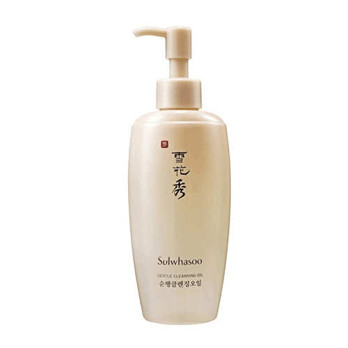

정기적으로 돌아오는 아이고 몬생겼어 시즌입니다.
이럴땐 돈을써야합니다!
맛있는거 먹고 예쁜거 보고 얼굴에 바를걸 사야해요!!
색조는 요새 좀 시들해 졌고
스킨케어제품에는 그닥 돈을 쓰는편이 아니었는데 (적당한거 사서 많이바르자 주의^^)
갑자기 급 심경의 변화(?)로 이것저것 사봤습니다 :3
설화수 순행 클렌징 오일
이거야 엄마님 샘플 꾸준히 얻어쓰고 있었는데 세안후 개운하고 촉촉한 느낌이 좋아서
이번에 구입해봤습니다.
클렌징 오일도 다른사람이 좋다고 추천하는건 열심히 사서 사용해보는데
저의 큰 문제는 뭘 써도 그닥 큰 감동이 없어요;;
인간 자체가 너무 무딘건가;;; (음식도 그럽니다;;;;)
디알프로그 워터 풀차지 크림
올리브영 세일할때 구입
수분크림은 키엘제품 꾸준히 사용하다가 영국에서는 simple 브랜드 꽤나 오래 충성했었고
한국와서 방황중이었는데 이제껏 구입했던 크림중 젤 제 취향입니다
무조건 가볍고 쵹쵹한게 좋아
미샤 타임 레볼루션 스페셜 리미티드에디션 3종
이것도 주변추천에 혹해서 함 사봤습니당 ^^
에센스 2병 + 앰플 구성으로 5만9천원 :3 가격도 괜찮겠다 호기심에 구입
직원분이 꾸준히 사용하면 효과 보실거라구 그러는데 아침저녁으로 열심히 사용해 볼렵니다
다쓰고 피테라 에센스랑 갈색병도 함 써봐야겠어요 (과연 차이점을 알 수 있을 것인가;;)
그리고 오늘 현백에 시세이도 쿠션을 사러 갔었는데
일욜 저녁이라 그런지(?) 직원분 한명이 다른 손님 응대하고 있었고
첨엔 기다리겠다고 매장 주변을 빙빙 돌았지만 금방 끝날거 같지않아 걍 집에 왔습니다
......내일 다시 가야지
2월달 날이 춥기도하고 정말 로동과 수면 이외는 한게없어서(...)
쌓인게 폭발했는지 쇼핑의욕 수직상승 중입니다
날도 따닷해지고 놀러나가고 싶네용 :)